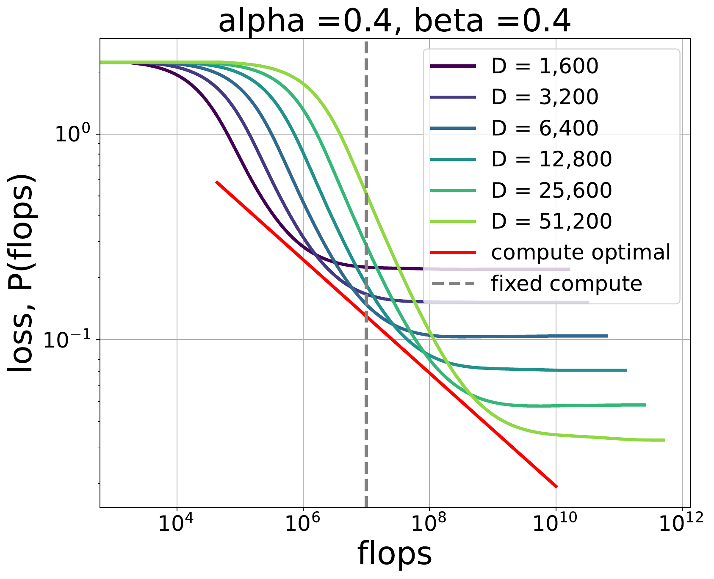
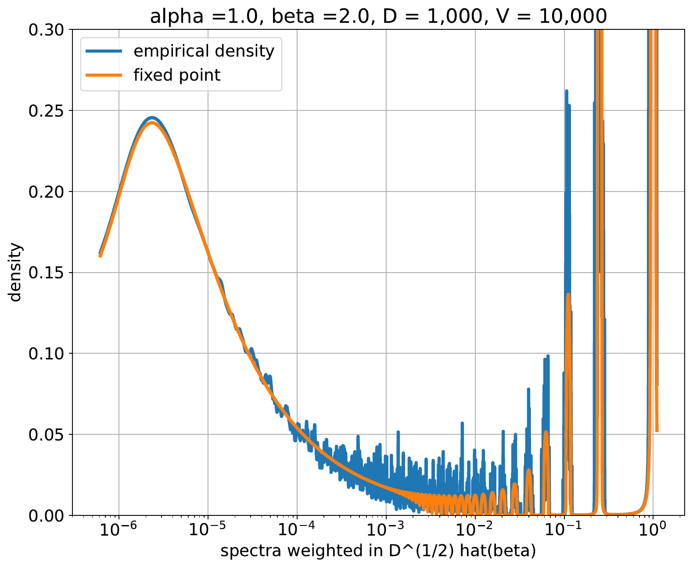
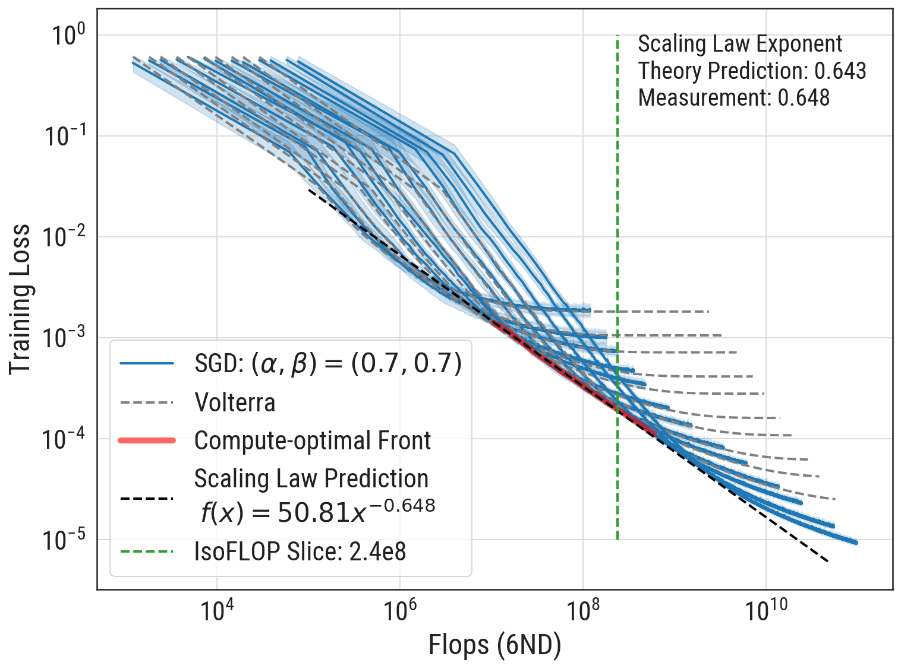

Compute-Optimal Scaling Laws
Module 2
1 The Scaling-Law Question
Scaling laws were one of the organizing principles of the first part of the large-language-model revolution. Empirical laws related loss to model size, dataset size, and compute, and they made it possible to extrapolate beyond the largest experiment one could afford to run. This point of view guided the development of GPT-3 and GPT-4 and culminated, in one influential form, in the Chinchilla study (Kaplan et al. 2020; Hoffmann et al. 2022).
Today, compute-optimal pretraining is not necessarily the dominant engineering question at a frontier lab. A model may be deliberately overtrained because it will be served many times. The parameter count may be chosen to meet inference, latency, or memory constraints rather than to minimize pretraining loss at a fixed FLOP budget. Much of the work of a large laboratory is now about productization and serving.
The scientific question remains important. Scaling laws tell us the rough relation between the amount of data, the length of training, and model size. They tell us how much improvement to expect from the next increase in compute. They also pose one of the central questions in optimization:
If an optimization problem is made ten times larger, how should every choice in the training procedure change?
This includes layer-dependent initialization, normalization, learning rates, optimizer parameters, and schedules. A naive grid search does not scale to this problem. Even a three-dimensional grid is expensive at frontier scale, while a schedule belongs to an infinite-dimensional search space. Some understanding has to replace brute force.
The simplifying structure in these notes is again a power-law covariance spectrum. We will study the power-law random features (PLRF) model of Paquette, Paquette, Xiao, and Pennington (Paquette et al. 2024). It is a linear model, but it is rich enough to produce:
- nontrivial learning curves under one-pass SGD;
- a Chinchilla-like compute-optimal relation;
- crossovers between different apparent power laws; and
- four phases, with three additional subphases, controlled by different statistical and optimization bottlenecks.
The lesson is not that this quadratic model is a literal theory of a transformer. It is that broken scaling laws and changing slopes already occur in one of the simplest models in which data geometry, finite width, and optimizer noise interact.
When a scaling curve changes slope, has the intrinsic difficulty of the problem changed, or has some initialization, learning rate, normalization, or schedule failed to scale correctly? Both mechanisms are possible, even in a solvable model.
2 Compute Optimality
Suppose a model of size \(d\) is trained for \(r\) steps with batch size \(B\). In the model below, the leading compute cost is
\[ \mathsf C \asymp dBr. \]
At fixed compute \(\mathsf C\), increasing \(d\) gives a more expressive model but leaves fewer optimization steps. Decreasing \(d\) allows more steps but eventually runs into a capacity floor. The compute-optimal problem is
\[ d_\star(\mathsf C) \in \operatorname*{arg\,min}_{d} \mathcal L\left(r=\frac{\mathsf C}{dB},d\right). \]

The Chinchilla observation is that, over the range studied, compute should be allocated approximately evenly on a logarithmic scale between model size and training tokens. In our notation this is the relation
\[ d_\star(\mathsf C)\asymp \mathsf C^{1/2}, \qquad r_\star(\mathsf C)\asymp \mathsf C^{1/2}. \]
The PLRF model reproduces this relation over a substantial region of its phase diagram. It also explains why it is not universal across all problem classes.
For each compute budget, imagine training many model sizes and retaining the one with the lowest loss. The lower envelope of those loss curves is the compute-optimal loss \(\mathcal L_\star(\mathsf C)\); the minimizing sizes form \(d_\star(\mathsf C)\). Empirically this is the logic of an IsoFLOP experiment. The frontier is a scientific benchmark, not a prescription that every deployed model must be stopped at that point.
3 The Power-Law Random Features Model
Let the input be
\[ X=(X_1,\ldots,X_v),\qquad X_j=j^{-\alpha/2}Z_j,\qquad Z_j\stackrel{\mathrm{iid}}{\sim}\mathcal N(0,1), \]
so that
\[ \Sigma=\mathbb E[XX^\top] =\operatorname{diag}(1^{-\alpha},2^{-\alpha},\ldots,v^{-\alpha}). \]
The target is the linear functional
\[ Y=\langle X,b\rangle, \qquad b_j=j^{-\beta}. \]
Here \(\alpha\) measures the decay of the data covariance spectrum and \(\beta\) measures the alignment or smoothness of the target. A large \(\beta\) concentrates the target on the leading, easy-to-learn directions; a small \(\beta\) places more target energy in the tail.
Instead of fitting all \(v\) coordinates, introduce a Gaussian random feature map
\[ W\in\mathbb R^{v\times d}, \qquad W_{jk}\stackrel{\mathrm{iid}}{\sim}\mathcal N(0,1/d), \qquad \phi(X)=W^\top X. \]
The model predicts \(\widehat Y_\theta=\langle W^\top X,\theta\rangle\). Its population loss is the quadratic
\[ \begin{aligned} \mathcal L(\theta) &=\mathbb E\left[ \bigl(\langle W^\top X,\theta\rangle-\langle X,b\rangle\bigr)^2 \right] \\ &=\left\|\Sigma^{1/2}(W\theta-b)\right\|_2^2. \end{aligned} \]
There are three structural parameters:
| parameter | role |
|---|---|
| \(\alpha\) | decay of the covariance eigenvalues; data geometry |
| \(\beta\) | decay of the target coefficients; target difficulty |
| \(d\) | number of random features; model capacity |
We run one-pass mini-batch SGD on fresh samples, with constant step size \(\gamma\). This removes finite-dataset reuse from the problem and isolates the interaction between the spectrum, random feature map, and stochastic optimization.
The 4+3 paper writes \(X_j=j^{-\alpha_{\rm paper}}Z_j\). Its covariance eigenvalues therefore decay as \(j^{-2\alpha_{\rm paper}}\). These notes reserve \(\alpha\) for the covariance-eigenvalue exponent: \[ \alpha=2\alpha_{\rm paper}. \] Thus the paper’s high-dimensional line \(2\alpha_{\rm paper}=1\) is \(\alpha=1\) here.
4 Why Random Matrix Theory Appears
The Hessian of the feature-space population loss is
\[ \widehat K=W^\top\Sigma W. \]
Equivalently, its nonzero eigenvalues are those of \(\Sigma^{1/2}WW^\top\Sigma^{1/2}\). Even though \(\Sigma\) is diagonal, the random projection mixes its eigendirections. Learning curves depend on functions of \(\widehat K\), such as
\[ (I-\gamma\widehat K)^r \quad\text{and}\quad (\widehat K-zI)^{-1}. \]
The relevant object is therefore not merely the population spectrum of \(\Sigma\), but the spectrum and resolvent of a random sample covariance matrix.
4.1 The Marchenko–Pastur law
Start with the isotropic case. Let \(G\in\mathbb R^{n\times d}\) have independent \(\mathcal N(0,1)\) entries and let \(d/n\to c\in(0,\infty)\). The empirical eigenvalue distribution of
\[ S=\frac1nG^\top G \]
converges to the Marchenko–Pastur distribution. Its continuous density is
\[ \rho_c(x)= \frac{\sqrt{(b-x)(x-a)}}{2\pi c x}\, \mathbf 1_{[a,b]}(x), \qquad a=(1-\sqrt c)^2,\quad b=(1+\sqrt c)^2, \]
with the appropriate atom at zero when the matrix has a macroscopic nullspace.
Theorem 1 (Marchenko–Pastur) If \(d/n\to c\) and the entries of \(G\) are iid, centered, variance one, and have sufficient moments, then the empirical spectral distribution of \(n^{-1}G^\top G\) converges almost surely to the Marchenko–Pastur law with aspect ratio \(c\).
The key point is that the sample spectrum does not collapse to a point at one when dimension and sample size grow together.
For a non-isotropic covariance \(\Sigma\), one obtains a deformed Marchenko–Pastur problem. Its deterministic equivalent is encoded by a scalar fixed point for a Stieltjes-transform-like function \(m(z)\). In the PLRF normalization, the diagonal resolvent approximation takes the form
\[ \mathcal R(z)_{jj} =\frac{1}{j^{-\alpha}m(z)-z}, \]
where \(m(z)\) solves
\[ m(z) = \left[ 1+\frac1d\sum_{j=1}^{v} \frac{j^{-\alpha}}{j^{-\alpha}m(z)-z} \right]^{-1}. \]
This one-dimensional nonlinear equation replaces a large random matrix. Once \(m(z)\) is known, contour integrals of \(\mathcal R(z)\) predict the spectral quantities entering the learning curve.
Here is the resolvent calculation behind the fixed-point equation. The purpose is to show the mechanism; we leave the concentration estimate as a lemma.
Write
\[ \Lambda\succeq0\quad\text{deterministic}, \qquad W=\frac{1}{\sqrt d}G, \qquad H=\Lambda^{1/2}WW^\top\Lambda^{1/2}, \]
where the entries of \(G\) are independent standard Gaussians. For \(z\in\mathbb C_+\), let
\[ R=R(z)=(H-zI)^{-1}, \qquad t_d(z)=\frac1d\operatorname{Tr}(\Lambda R), \qquad m_d(z)=\frac{1}{1+t_d(z)}. \]
No power-law assumption on \(\Lambda\) is needed for the derivation. By the orthogonal invariance of \(G\), we may work in an eigenbasis of \(\Lambda\) and write
\[ \Lambda=\operatorname{diag}(\lambda_1,\ldots,\lambda_v). \]
We seek an equation for the diagonal entries of \(R\) in this basis. There are three elementary ingredients.
1. Start from the resolvent identity. Since \(R(H-zI)=I\),
\[ RH=I+zR. \tag{1} \]
Factor the left-hand side as
\[ RH = \bigl(R\Lambda^{1/2}W\bigr) \bigl(W^\top\Lambda^{1/2}\bigr). \tag{2} \]
This exposes one copy of \(W\) to which we can apply Gaussian integration by parts.
2. Differentiate the resolvent. For a perturbation \(W\mapsto W+\varepsilon\Delta\), define the directional derivative of a matrix-valued function \(F\) by
\[ \boxed{ \partial_\Delta F(W) := \left.\frac{d}{d\varepsilon} F(W+\varepsilon\Delta)\right|_{\varepsilon=0}. } \]
The base point is \(W\) and \(\Delta\) is the perturbation direction. In particular, \(\partial_{\widetilde W}F(W)\) below means that the derivative is taken at \(W\) in the independent random direction \(\widetilde W\). With this notation,
\[ \partial_\Delta H =\Lambda^{1/2}(\Delta W^\top+W\Delta^\top)\Lambda^{1/2}, \tag{3} \]
and, by differentiating \(R(H-zI)=I\),
\[ \boxed{ \partial_\Delta R =-R(\partial_\Delta H)R. } \tag{4} \]
3. Replace the exposed Gaussian by an independent copy. Let \(\widetilde W\) be an independent copy of \(W\). For any smooth, compatible matrix-valued function \(F\),
\[ \boxed{ \mathbb E\!\left[F(W)W^\top\right] = \mathbb E\!\left[ \bigl(\partial_{\widetilde W}F(W)\bigr)\widetilde W^\top \right]. } \tag{5} \]
This is just Stein’s lemma written probabilistically. The derivative is linear in \(\widetilde W\), and multiplication by the independent copy performs the Gaussian contraction. No coordinates or divergence notation are required.
Apply (5) to
\[ F(W)=R(W)\Lambda^{1/2}W. \]
Using the product rule and (4),
\[ \partial_{\widetilde W} \bigl(R\Lambda^{1/2}W\bigr) = -R\Lambda^{1/2} (\widetilde W W^\top+W\widetilde W^\top) \Lambda^{1/2}R\Lambda^{1/2}W + R\Lambda^{1/2}\widetilde W. \tag{6} \]
Multiplying (6) on the right by \(\widetilde W^\top\Lambda^{1/2}\) and taking expectation gives
\[ \begin{aligned} \mathbb E[RH] ={}& \mathbb E\!\left[ R\Lambda^{1/2}\widetilde W\widetilde W^\top\Lambda^{1/2} \right]\\ &- \mathbb E\!\left[ R\Lambda^{1/2} (\widetilde W W^\top+W\widetilde W^\top) \Lambda^{1/2}R\Lambda^{1/2}W \widetilde W^\top\Lambda^{1/2} \right]. \end{aligned} \tag{7} \]
Now condition on \(W\) and apply Wick’s formula to the two occurrences of \(\widetilde W\). It is useful to name the two contractions that occur. For a \(d\times d\) matrix \(A\), define the coherent contraction
\[ \mathsf C_{\widetilde W}[A] := \mathbb E_{\widetilde W} \left[\widetilde W A\widetilde W^\top\right] = \frac1d\operatorname{Tr}(A)I_v. \tag{8} \]
For a \(v\times v\) matrix \(B\) and a \(v\times d\) matrix \(C\), define the incoherent contraction
\[ \mathsf I_{\widetilde W}[B,C] := \mathbb E_{\widetilde W} \left[\widetilde W^\top B C\widetilde W^\top\right] = \frac1d C^\top B^\top. \tag{9} \]
Both identities are just
\[ \mathbb E[ \widetilde W_{ia}\widetilde W_{jb}] =\frac1d\delta_{ij}\delta_{ab}. \]
The distinction is how the indices are wired. The coherent contraction closes a loop and creates a trace times an identity. The incoherent contraction crosses the two wires and reverses the order, producing \(C^\top B^\top\) rather than a trace. These are the two Wick rules we will reuse later.
Apply them to (7). The first term is immediate:
\[ \mathbb E_{\widetilde W} \left[ R\Lambda^{1/2}\widetilde W\widetilde W^\top\Lambda^{1/2} \right] =R\Lambda. \tag{10} \]
For the first crossing term, take
\[ A=W^\top\Lambda^{1/2}R\Lambda^{1/2}W. \]
The coherent rule gives
\[ -\frac1d \operatorname{Tr}(RH)\,R\Lambda. \tag{11} \]
For the second crossing term, use the incoherent rule with \(B=\Lambda^{1/2}R\Lambda^{1/2}\) and \(C=W\). Since \(R^\top=R\), the reversal gives
\[ -\frac1d RHR\Lambda. \tag{12} \]
Therefore the entire independent-copy expectation is
\[ \boxed{ \mathbb E[RH] = \mathbb E\left[ q_d(z)R\Lambda-\frac1dRHR\Lambda \right], \qquad q_d(z):=1-\frac1d\operatorname{Tr}(RH). } \tag{13} \]
The two terms have different origins. The scalar \(q_d\) is created by the trace-producing coherent contraction. The matrix correction \(d^{-1}RHR\Lambda\) is the non-trace, incoherent contraction.
Using \(RH=I+zR\), the \(j\)th diagonal entry of (13) becomes
\[ \mathbb E\!\left[ \bigl(\lambda_jq_d(z)-z\bigr)R_{jj}(z) \right] = 1+\frac{\lambda_j}{d} \mathbb E[(RHR)_{jj}]. \tag{14} \]
The same computation with \(i\ne j\) shows that the expected off-diagonal entries are negligible. The explicit final term in (14) is small for fixed \(\operatorname{Im}z>0\) because of the a priori resolvent bound.
At this point no further integration by parts is needed. The deterministic bound
\[ \|R(z)\|\le \frac{1}{\operatorname{Im}z} \tag{15} \]
controls the explicit \(d^{-1}\) correction, and the remaining input is concentration of normalized traces.
Lemma 1 (Gaussian resolvent concentration) For every fixed \(z\in\mathbb C_+\), normalized resolvent traces concentrate:
\[ \operatorname{Var}\!\left( \frac1d\operatorname{Tr}(\Lambda R(z)) \right)\longrightarrow 0. \]
The same holds for the other normalized resolvent traces in the master equation. Consequently, the scalar \(q_d(z)\) and the normalized resolvent traces may be replaced by their deterministic limits in the proportional limit, under the usual boundedness assumptions on the aspect ratio and the covariance profile.
The proof follows from the Gaussian Poincaré inequality together with (3), (4), and (15).
Trace concentration is used at exactly one conceptual point: it lets us factor the random scalar \(q_d(z)\) from a resolvent entry. Dropping the explicit \(d^{-1}\) correction in (14) gives
\[ \bigl(\lambda_jq(z)-z\bigr)\mathcal R_{jj}(z)=1. \]
so
\[ \mathcal R_{jj}(z)=\frac{1}{\lambda_jq(z)-z}. \tag{16} \]
Finally, take the normalized trace of the deterministic version of (13) and use \(RH=I+zR\). The resulting scalar relation is
\[ q(z) = \left[ 1+\frac1d\operatorname{Tr}(\Lambda\mathcal R(z)) \right]^{-1}. \tag{17} \]
Substituting (16) into (17) gives
\[ \boxed{ q(z) = \left[ 1+\frac1d\sum_{j=1}^{v} \frac{\lambda_j}{\lambda_jq(z)-z} \right]^{-1}. } \tag{18} \]
Renaming \(q\) as \(m\), equation (18) is the deformed Marchenko–Pastur equation for a general deterministic covariance profile \((\lambda_j)\). Only now do we specialize to the PLRF covariance \(\lambda_j=j^{-\alpha}\), which gives the fixed-point equation displayed above.

The resolvent does more than package spectral functions. Its main advantage in random matrix theory is that it replaces a singular spectral object by a smooth, stable function in the upper half-plane.
Let
\[ R(z)=(\widehat K-zI)^{-1}, \qquad z=E+i\eta,\quad \eta>0. \]
A priori stability. Since \(\widehat K\) is self-adjoint,
\[ \boxed{\|R(E+i\eta)\|\le \frac1\eta.} \]
This bound is deterministic: it holds before averaging and without knowing anything about the eigenvalue locations. Staying above the real axis prevents the inverse from approaching a pole.
A smoothed density estimator. If
\[ \mu_{\widehat K} =\frac1p\sum_{j=1}^p\delta_{\lambda_j} \]
is the empirical eigenvalue distribution, then its Stieltjes transform is
\[ s_p(z) =\frac1p\operatorname{Tr}R(z) =\int\frac{1}{\lambda-z}\,d\mu_{\widehat K}(\lambda). \]
Taking imaginary parts gives
\[ \frac1\pi\operatorname{Im}s_p(E+i\eta) = \int \underbrace{ \frac1\pi\frac{\eta}{(E-\lambda)^2+\eta^2} }_{P_\eta(E-\lambda)} \,d\mu_{\widehat K}(\lambda) =(P_\eta*\mu_{\widehat K})(E). \]
Thus \(\pi^{-1}\operatorname{Im}s_p(E+i\eta)\) is the empirical spectral measure smoothed by a Poisson kernel of width \(\eta\). Sending \(\eta\downarrow0\) recovers the density at its continuity points. The height above the axis is a resolution parameter: smaller \(\eta\) sees finer spectral structure, while larger \(\eta\) gives stronger stability.
Smoothness under matrix perturbations. For two self-adjoint matrices \(A\) and \(B\), the resolvent identity gives
\[ R_A(z)-R_B(z) =-R_A(z)(A-B)R_B(z). \]
Consequently,
\[ \|R_A(z)-R_B(z)\| \le \frac{\|A-B\|}{\eta^2}. \]
Infinitesimally, if \(A\) is perturbed in the direction \(\Delta\),
\[ \partial_\Delta R_A(z)=-R_A(z)\Delta R_A(z). \]
This explicit derivative is exactly what makes Stein’s lemma, Gaussian Poincaré inequalities, and resolvent concentration convenient. Every derivative produces more resolvent factors, and every such factor is controlled by \(1/\eta\).
Recovering other spectral quantities. Finally, for an analytic function \(f\),
\[ f(\widehat K)=\frac{1}{2\pi i}\oint_\Gamma f(z)(\widehat K-zI)^{-1}\,dz. \]
Thus resolvent estimates can be converted into estimates for powers, gradient-descent propagators, spectral projectors, and the forcing and kernel terms below. But functional calculus is only the final step. The reason the resolvent is so effective is the combination of spectral smoothing, a priori upper-half-plane stability, analyticity, and simple differentiation with respect to the underlying random matrix.
5 SGD Risk as a Volterra Equation
Let \(e_r=W\theta_r-b\) be the residual in the original coordinate space. If we replaced every stochastic gradient by its expectation, the residual would evolve linearly under the population Hessian. SGD adds a mean-zero fluctuation whose conditional variance is proportional to the current loss. Because the loss is quadratic, this second-moment recursion closes.
After conditioning on \(W\), the expected population loss has the form
\[ \boxed{ P_r=F_r+\sum_{s=0}^{r-1}K_{r-1-s}P_s } \tag{V} \]
where
- \(F_r\) is the loss propagated by the mean gradient dynamics, including the approximation error of the random feature model;
- \(K_r\ge 0\) is a memory kernel generated by stochastic-gradient noise.
Equation (V) is a discrete convolution Volterra equation. It is a bias–variance decomposition with feedback: the deterministic part of the trajectory is the forcing \(F\), while the variance injected at time \(s\) is propagated for another \(r-s\) steps and contributes \(K_{r-s}P_s\).
The exact forcing and kernel are random because they depend on \(W\). Random matrix theory replaces their resolvents by deterministic equivalents, yielding deterministic sequences \(\mathscr F_r\), \(\mathscr K_r\), and \(\mathscr P_r\) that accurately track the SGD trajectory:
\[ \mathscr P=\mathscr F+\mathscr K*\mathscr P. \]
The closure is exact in every dimension and for every Gaussian covariance; no random matrix limit is needed. Consider first a realizable linear regression problem. Let
\[ x\sim\mathcal N(0,H), \qquad y=x^\top\theta_\star, \qquad e_r=\theta_r-\theta_\star, \]
where \(H\) is any positive semidefinite matrix. With a fresh batch of \(B\) samples at every step,
\[ e_{r+1}=(I-\gamma\widehat H_r)e_r, \qquad \widehat H_r=\frac1B\sum_{b=1}^B x_{r,b}x_{r,b}^\top. \tag{12} \]
The population risk is
\[ P_r=\mathbb E[e_r^\top H e_r] =\operatorname{Tr}(HC_r), \qquad C_r=\mathbb E[e_re_r^\top]. \tag{13} \]
Everything follows from the Gaussian fourth-moment identity
\[ \mathbb E[xx^\top Axx^\top] =2HAH+\operatorname{Tr}(HA)H \tag{14} \]
for symmetric \(A\). Indeed, the terms in the batch with two different sample indices factor, while (14) handles the equal-index terms. Therefore
\[ \mathbb E[\widehat H_r A\widehat H_r] =HAH+\frac1B \left(HAH+\operatorname{Tr}(HA)H\right). \tag{15} \]
Condition on \(e_r\) in (12), expand the square, and use (15). We obtain the closed covariance recursion
\[ C_{r+1} =\underbrace{ (I-\gamma H)C_r(I-\gamma H) +\frac{\gamma^2}{B}HC_rH }_{\mathcal A(C_r)} +\frac{\gamma^2}{B}P_rH. \tag{16} \]
Thus the matrix-valued second moment evolves under a fixed linear operator \(\mathcal A\), driven only by the scalar risk. Iterating (16) gives
\[ C_r =\mathcal A^r(C_0) +\frac{\gamma^2}{B} \sum_{s=0}^{r-1} P_s\,\mathcal A^{r-1-s}(H). \tag{17} \]
Take \(\operatorname{Tr}(H\,\cdot)\) and define
\[ F_r=\operatorname{Tr}\!\left(H\mathcal A^r(C_0)\right), \qquad K_\ell=\frac{\gamma^2}{B} \operatorname{Tr}\!\left(H\mathcal A^\ell(H)\right). \tag{18} \]
Then (17) becomes exactly
\[ \boxed{ P_r=F_r+\sum_{s=0}^{r-1}K_{r-1-s}P_s. } \tag{19} \]
This is the Volterra equation. The kernel is nonnegative because \(\mathcal A\) preserves positive semidefinite matrices.
The same argument covers a general jointly Gaussian linear prediction problem. Project the label onto the Gaussian features. The residual is uncorrelated with the features and hence, by joint Gaussianity, independent of them. Its variance contributes an additional deterministic forcing term, but the operator \(\mathcal A\), the kernel \(K\), and the Volterra closure are unchanged. Conditioning on the random feature matrix \(W\) puts the PLRF problem precisely in this setting, with \(H=W^\top\Sigma W\).
Proposition 1 (Stability criterion) For a nonnegative convolution kernel, a bounded forcing produces a bounded solution when \[ \|\mathscr K\|_1=\sum_{r\ge 0}\mathscr K_r<1. \] In the SGD problem, this is the learning-rate/batch-size stability condition. As the kernel norm approaches one, stochastic fluctuations are repeatedly amplified.
For Gaussian covariates, the condition can be evaluated explicitly. Let \(\lambda_1,\ldots,\lambda_p\) be the eigenvalues of the feature covariance \(H\). Recall from the proof above that
\[ \mathcal A(C) =(I-\gamma H)C(I-\gamma H) +\frac{\gamma^2}{B}HCH. \]
Because the kernel starts from \(H\), only diagonal matrices in the eigenbasis of \(H\) enter its calculation. On the \(i\)th diagonal direction, \(\mathcal A\) acts by multiplication by
\[ a_i =(1-\gamma\lambda_i)^2 +\frac{\gamma^2}{B}\lambda_i^2 =1-2\gamma\lambda_i +\gamma^2\left(1+\frac1B\right)\lambda_i^2. \]
Consequently,
\[ K_r =\frac{\gamma^2}{B} \sum_{i=1}^p\lambda_i^2a_i^r. \]
Provided \(a_i<1\) for every nonzero eigenvalue, the geometric series can be summed:
\[ \boxed{ \|K\|_1 =\frac{\gamma}{B} \sum_{i=1}^p \frac{\lambda_i} {2-\gamma(1+1/B)\lambda_i}. } \]
Thus mean-square stability requires both
\[ \gamma\left(1+\frac1B\right)\lambda_{\max}(H)<2 \]
and
\[ \frac{\gamma}{B} \sum_{i=1}^p \frac{\lambda_i} {2-\gamma(1+1/B)\lambda_i} <1. \]
The first inequality makes every individual eigendirection contract. The second is genuinely collective: stochastic noise injected across all directions must not regenerate more risk than the dynamics dissipate. Each eigendirection contributes its variance, multiplied by its total future amplification.
The trace scale can be made precise without assuming in advance that \(\gamma\) is small. Since every denominator in the exact formula is at most \(2\),
\[ \|K\|_1 \ge \frac{\gamma}{2B}\operatorname{Tr}(H). \]
Hence stability necessarily requires
\[ \gamma< \frac{2B}{\operatorname{Tr}(H)}. \]
In the other direction, replacing every eigenvalue in the denominator by \(\lambda_{\max}=\|H\|\) gives
\[ \|K\|_1 \le \frac{\gamma\,\operatorname{Tr}(H)} {B\left[2-\gamma(1+1/B)\|H\|\right]}. \]
It follows that the explicit condition
\[ \boxed{ \gamma < \frac{2B} {\operatorname{Tr}(H)+(B+1)\|H\|} } \]
is sufficient for mean-square stability. Define the effective rank
\[ r_{\mathrm{eff}}(H) :=\frac{\operatorname{Tr}(H)}{\|H\|}. \]
This is also the stable rank of \(H^{1/2}\). If \(\gamma_c\) denotes the exact stability threshold, the necessary and sufficient bounds give
\[ \frac{2B}{\operatorname{Tr}(H)} \frac{1}{1+(B+1)/r_{\mathrm{eff}}(H)} \ \le\ \gamma_c\ \le\ \frac{2B}{\operatorname{Tr}(H)}. \]
Therefore, whenever the effective rank is large compared with the batch size,
\[ r_{\mathrm{eff}}(H)\gg B, \qquad\Longrightarrow\qquad \boxed{ \gamma_c = \frac{2B}{\operatorname{Tr}(H)} \left(1+O\left(\frac{B+1}{r_{\mathrm{eff}}(H)}\right)\right). } \]
This is the more useful interpretation of the trace threshold. The approximation is accurate because no single eigendirection carries an appreciable fraction of the total spectral mass. The collective noise from the many directions, rather than the top eigenvalue alone, determines stability.
Connection with critical batch size. The transition occurs when
\[ B_{\mathrm{crit}}\asymp r_{\mathrm{eff}}(H). \]
Below this scale, increasing \(B\) permits an approximately proportional increase in the stable step size:
\[ \gamma_c\asymp \frac{B}{\operatorname{Tr}(H)}. \]
Once \(B\) is comparable to or larger than the effective rank, the top-eigenvalue term can no longer be ignored and the threshold crosses over toward the full-gradient scale \(1/\|H\|\). This is a spectral version of the critical batch size in the large-batch literature: below the critical batch, more parallel samples buy an almost linear improvement; above it, the benefit saturates. See McCandlish et al., An Empirical Model of Large-Batch Training for the gradient-noise-scale formulation and Ma, Bassily, and Belkin, The Power of Interpolation for a critical-batch transition in an interpolating model. The notions are not identical—the calculation here concerns mean-square stability rather than time-to-target—but they describe the same small-batch linear-scaling versus large-batch saturation crossover.
For example, if \(H=\lambda I_p\), the exact condition reduces to
\[ \gamma\lambda < \frac{2}{1+(p+1)/B}. \]
With \(B\ll p\), the stable learning rate is of order \(B/(p\lambda)\). Increasing the batch size suppresses the collective noise feedback; as \(B\to\infty\), the condition approaches the ordinary gradient-descent threshold \(\gamma\lambda<2\).
6 Kesten’s Lemma: From Implicit to Explicit
The Volterra equation is already numerically useful, but it is still implicit: \(\mathscr P\) occurs on both sides. Formally iterating it gives the renewal series
\[ \mathscr P =\mathscr F+\mathscr K*\mathscr F +\mathscr K^{*2}*\mathscr F+\cdots. \]
For an arbitrary heavy-tailed kernel, all convolution powers could matter. Kesten’s lemma says that a subexponential tail behaves differently: one large summand dominates a long convolution. In the form needed here, if \(\mathscr K\) is eventually decreasing and
\[ (\mathscr K*\mathscr K)_r \le 2(1+\varepsilon)\|\mathscr K\|_1\mathscr K_r \]
for large \(r\), then the full renewal series has the same tail order as its first terms. Under a fixed margin from the stability threshold,
\[ \mathscr F_r+\bigl(\mathscr K*\mathscr F\bigr)_r \ \lesssim\ \mathscr P_r \ \lesssim\ \mathscr F_r+C\bigl(\mathscr K*\mathscr F\bigr)_r. \]
For the PLRF power laws this simplifies further to
\[ \boxed{ \mathscr P_r \asymp \mathscr F_r+\frac{1}{\gamma B}\mathscr K_r . } \]
This is the decisive step: it converts an implicit dynamical equation into a finite competition among explicit power laws.
We state the renewal argument for nonnegative sequences. Let \(K_r\ge0\) be summable and write
\[ \rho=\|K\|_1<1. \]
The relevant hypothesis is not merely that \(K\) decays slowly. It is the following convolution-tail property.
Definition 1 (Discrete subexponential kernel) A nonnegative summable sequence \(K\) is subexponential if
\[ \frac{K_{r-s}}{K_r}\longrightarrow1 \qquad\text{for every fixed }s, \tag{20} \]
and
\[ \boxed{ \frac{(K*K)_r}{K_r} \longrightarrow 2\|K\|_1=2\rho. } \tag{21} \]
Equivalently, the condition needed for the upper bound is that, for every \(\varepsilon>0\), there exists \(r_\varepsilon\) such that
\[ (K*K)_r \le 2(1+\varepsilon)\rho K_r, \qquad r\ge r_\varepsilon. \tag{22} \]
The factor \(2\) corresponds to the two ways a sum can be large: the first summand is large or the second summand is large. Two moderately large summands make a negligible contribution.
Regularly varying summable sequences,
\[ K_r=r^{-q}L(r), \qquad q>1, \]
with \(L\) slowly varying, satisfy this criterion. This is the case relevant to the power-law kernels here.
Now suppose
\[ P=F+K*P. \tag{23} \]
Successive substitution is justified by monotonicity and gives
\[ P =F+K*F+K^{*2}*F+\cdots. \tag{24} \]
Every term is nonnegative. Consequently the lower bound is exact:
\[ \boxed{P\ge F+K*F.} \tag{25} \]
There is no asymptotic comparison symbol in this direction.
The uniform form of Kesten’s lemma upgrades the two-fold convolution criterion to all convolution powers: for every \(\varepsilon>0\), there is a finite constant \(C_\varepsilon\) such that
\[ K^{*n}(r) \le C_\varepsilon(1+\varepsilon)^n \rho^{\,n-1}K(r), \qquad n\ge1,\quad r\ge0. \tag{26} \]
Here is the mechanism behind the lemma. For the two-fold convolution, split
\[ (K*K)(r)= \sum_{s\le r/2}K(s)K(r-s) + \sum_{s>r/2}K(s)K(r-s). \]
In either half, one summand is of order \(r\). Long-tailedness allows that factor to be compared with \(K(r)\), while summing the other factor costs at most \(\rho\). Hence
\[ (K*K)(r)\le 2(1+\varepsilon)\rho K(r) \]
for large \(r\), which is precisely (22). For the induction from \(n\) to \(n+1\), split \(K^{*(n+1)}=K^{*n}*K\) into a boundary region, where one variable is bounded, and a central region, where both variables are large. The boundary region contributes the factor \(\rho\) and preserves the tail \(K(r)\); the subexponential criterion makes the central region negligible. Iterating this argument gives (26). The factor \((1+\varepsilon)^n\) makes the estimate uniform in the convolution order \(n\), and \(C_\varepsilon\) absorbs the finitely many small values of \(r\).
Choose \(\varepsilon\) so that \((1+\varepsilon)\rho<1\). Summing (26) over \(n\ge1\) yields the renewal-density bound
\[ U(r):=\sum_{n\ge1}K^{*n}(r)\le C K(r). \tag{27} \]
Using (24),
\[ P=F+U*F\le F+C\,K*F. \tag{28} \]
Together with (25), this proves
\[ F+K*F\le P\le F+C\,K*F. \tag{29} \]
This is the form of Kesten’s lemma needed for the PLRF loss curve: the concrete \(K*K\lesssim K\) criterion controls the entire renewal series.
7 The Four Terms in the Loss
The forcing itself has three spectral pieces. Together with the kernel, the expected loss is, up to constants,
\[ \boxed{ \mathscr P(r,d) \asymp \underbrace{\mathscr F_{\rm pp}(r)}_{\text{population bias}} +\underbrace{\mathscr F_{\rm ac}(r,d)}_{\text{embedding bias}} +\underbrace{\mathscr F_0(d)}_{\text{model capacity}} +\underbrace{\frac1{\gamma B}\mathscr K_{\rm pp}(r)}_{\text{stochastic variance}} . } \]
The cleanest route is to define the measure before the forcing, following the measure-first presentation in Ferbach et al. (2025). Set
\[ \Lambda=\operatorname{diag}(\lambda_1,\ldots,\lambda_v), \qquad H=\Lambda^{1/2}WW^\top\Lambda^{1/2}, \qquad y=\Lambda^{1/2}b. \]
If \(Hu_\ell=x_\ell u_\ell\), define the target-weighted empirical spectral measure
\[ \widehat\mu_{\mathscr F} = \sum_{\ell=1}^v \left|\langle u_\ell,y\rangle\right|^2\delta_{x_\ell}. \]
This is the spectrum of \(H\) seen in the basis of the initial residual \(y\), rather than an unweighted eigenvalue count. It is exactly the measure needed to define the forcing: for a modewise squared-residual propagator \(\varphi_r(x)\),
\[ \widehat{\mathscr F}(r) = \int_{\mathbb R_+}\varphi_r(x)\, \widehat\mu_{\mathscr F}(dx). \]
For full-batch gradient descent, \(\varphi_r(x)=(1-\gamma x)^{2r}\); in the stable scaling regime it behaves like \(e^{-2\gamma rx}\). Other optimizers change the propagator but use the same measure.
The Stieltjes transform of \(\widehat\mu_{\mathscr F}\) is
\[ \int_{\mathbb R_+}\frac{\widehat\mu_{\mathscr F}(dx)}{x-z} = y^\top(H-zI)^{-1}y. \]
Replacing the random resolvent by its deterministic equivalent \(\mathcal R(z)\) therefore defines the deterministic forcing measure \(\mu_{\mathscr F}\) through
\[ \int_{\mathbb R_+}\frac{\mu_{\mathscr F}(dx)}{x-z} = y^\top\mathcal R(z)y. \]
Stieltjes inversion recovers its continuous part, while any atom at zero is retained by the transform. In particular, \(\mu_{\mathscr F}(\{0\})=\mathscr F_0\).
Now comes the step that produces the other two pieces. In the regime used below, \(\alpha>1\) and \(\beta>1/2\), the deterministic-equivalent estimates imply, uniformly on mesoscopic dyadic intervals \(Md^{-\alpha}\le c\le M^{-1}\) for a fixed sufficiently large \(M\),
\[ \boxed{ \mu_{\mathscr F}([c,2c]) \asymp \underbrace{c^{\,1+(2\beta-1)/\alpha}}_{\text{population modes: population bias}} + \underbrace{\frac1d c^{\,1-1/\alpha}}_{\text{feature bulk: embedding bias}}. } \]
Thus the positive-spectrum part has the same dyadic mass as the sum of the two power-law reference measures
\[ d\mu_{\mathscr F_{\rm pp}}(x) \asymp x^{(2\beta-1)/\alpha}\,dx, \qquad d\mu_{\mathscr F_{\rm ac}}(x) \asymp \frac1d x^{-1/\alpha}\,dx. \]
The first is the power-law envelope of the target-weighted population spectral peaks and produces the population bias. The second is the absolutely continuous bulk created by the random feature map and produces the embedding bias. Applying the approximately exponential training filter gives
\[ \begin{aligned} \mathscr F_{\rm pp}(r) &\asymp \int_0^\infty e^{-2\gamma rx} x^{(2\beta-1)/\alpha}\,dx \asymp r^{-\left(1+(2\beta-1)/\alpha\right)},\\ \mathscr F_{\rm ac}(r,d) &\asymp \frac1d\int_0^\infty e^{-2\gamma rx} x^{-1/\alpha}\,dx \asymp d^{-1}r^{-1+1/\alpha}. \end{aligned} \]
This is the missing origin of the population-bias/embedding-bias (FPP/FAC) split: it is already present in the two-term local mass law for the residual-weighted spectral measure. The optimizer only integrates those two spectral contributions against its modewise propagator.
The capacity floor is the population loss of the best predictor in the span of the \(d\) random features. Let
\[ \Lambda=\operatorname{diag}(\lambda_1,\ldots,\lambda_v), \qquad H=\Lambda^{1/2}WW^\top\Lambda^{1/2}, \qquad y=\Lambda^{1/2}b. \]
Then
\[ \mathscr F_0 = \min_\theta\|\Lambda^{1/2}(W\theta-b)\|^2 = \|(I-\Pi_{\operatorname{ran}H})y\|^2. \tag{30} \]
The projector onto the nullspace of \(H\) can be extracted from the resolvent:
\[ I-\Pi_{\operatorname{ran}H} =\Pi_{\ker H} =\lim_{\eta\downarrow0}\eta(H+\eta I)^{-1}. \]
Consequently,
\[ \boxed{ \mathscr F_0 = \lim_{\eta\downarrow0} \eta\,y^\top(H+\eta I)^{-1}y. } \tag{31} \]
This formula makes the connection with the deformed Marchenko–Pastur law direct: the capacity floor is the target-weighted mass at the zero eigenvalue.
For \(z=-\eta\), the deterministic equivalent derived above is
\[ \mathcal R_{jj}(-\eta) = \frac{1}{\lambda_jm(-\eta)+\eta}. \tag{32} \]
In the underparameterized regime \(v>d\), the fixed-point solution vanishes linearly at the origin. Write
\[ m(-\eta)\sim\frac{\eta}{\kappa}. \]
Substitution into the deformed MP fixed-point equation and then taking \(\eta\downarrow0\) gives
\[ \boxed{ d=\sum_{j=1}^v\frac{\lambda_j}{\lambda_j+\kappa}. } \tag{33} \]
Thus \(\kappa\) is the spectral cutoff at which the covariance has effective dimension \(d\). Using (32) in (31) gives the deterministic-equivalent capacity floor
\[ \boxed{ \mathscr F_0 \asymp \sum_{j=1}^v \lambda_jb_j^2 \frac{\kappa}{\lambda_j+\kappa}. } \tag{34} \]
Directions with \(\lambda_j\gg\kappa\) are mostly represented by the random features and pay only the fraction \(\kappa/\lambda_j\). Directions with \(\lambda_j\ll\kappa\) are mostly missed and contribute essentially their full target energy \(\lambda_jb_j^2\).
Now specialize to
\[ \lambda_j\asymp j^{-\alpha}, \qquad b_j\asymp j^{-\beta}. \]
In the trace-class regime \(\alpha>1\) considered immediately below (and also when the ambient-to-feature aspect ratio remains controlled), the effective-dimension equation (33) gives
\[ \kappa\asymp d^{-\alpha}. \]
Equivalently, the crossover \(\lambda_j\asymp\kappa\) occurs at \(j\asymp d\). Splitting (34) at that index,
\[ \begin{aligned} \mathscr F_0 &\asymp \kappa\sum_{j\le d}b_j^2 + \sum_{j>d}\lambda_jb_j^2\\ &\asymp d^{-\alpha}\sum_{j\le d}j^{-2\beta} + \sum_{j>d}j^{-\alpha-2\beta}. \end{aligned} \tag{35} \]
Provided \(\alpha+2\beta>1\), both sums are finite in the relevant sense. If \(\beta<1/2\), the target has substantial tail energy and
\[ \mathscr F_0\asymp d^{-\alpha+1-2\beta}. \]
If \(\beta>1/2\), the leading target coordinates dominate and
\[ \mathscr F_0\asymp d^{-\alpha}. \]
Combining the two cases,
\[ \boxed{ \mathscr F_0(d) \asymp d^{-\alpha+\max\{0,1-2\beta\}}. } \tag{36} \]
At \(\beta=1/2\) there is the usual logarithmic correction. The capacity-floor exponent is therefore a consequence of two facts: the deformed MP law places the random-feature cutoff at the effective-dimension scale \(\kappa\asymp d^{-\alpha}\), and the target places a calculable amount of energy above and below that cutoff.
Above the high-dimensional line \(\alpha>1\), and away from critical boundaries, the basic exponents and their statistical meanings are summarized together below. The labels “pure point” and “absolutely continuous” describe the spectral components that generate the terms. Following Ferbach et al. (2025), we call the resulting loss contributions population bias and embedding bias.
| term and scaling | interpretation |
|---|---|
| FPP \(\mathscr F_{\rm pp}(r)\asymp r^{-\left(1+(2\beta-1)/\alpha\right)}\) |
Population bias. Ordinary relaxation of the target error along the population spectral modes. |
| FAC \(\mathscr F_{\rm ac}(r,d)\asymp d^{-1}r^{-1+1/\alpha}\) |
Embedding bias. Bias created by distortion of the population geometry under the random feature embedding; this is the displayed regime \(\beta>1/2\). |
| F0 \(\mathscr F_0(d)\asymp d^{-\alpha+\max\{0,1-2\beta\}}\) |
Model capacity. Irreducible approximation error from restricting the predictor to the span of \(d\) random features. |
| KPP \(\mathscr K_{\rm pp}(r)\asymp r^{-2+1/\alpha}\) |
Stochastic variance. Variance continuously injected by fresh mini-batches; it enters the total loss with prefactor \(1/(\gamma B)\). |
The irreducible loss \(\mathscr F_0\) is especially important. With a rough two-term approximation
\[ \mathscr P(r,d)\asymp r^{-p}+d^{-q}, \]
and \(\mathsf C\asymp dr\), balancing the terms gives
\[ d_\star(\mathsf C)\asymp \mathsf C^{p/(p+q)}, \qquad \mathscr P_\star(\mathsf C)\asymp \mathsf C^{-pq/(p+q)}. \]
This familiar calculation is correct only when those are actually the two dominant terms. The 4+3 phase diagram records when embedding bias or stochastic variance changes the balance.
8 The 4+3 Phase Diagram
The phases are regions in the \((\alpha,\beta)\)-plane in which different terms dominate the learning curve and different pairs of terms determine the compute-optimal stopping point.

The four main behaviors are:
| phase | dominant mechanism | compute-optimal balance |
|---|---|---|
| I | finite model capacity | train until population bias reaches the capacity floor |
| II | embedding bias | population bias meets embedding bias |
| III | embedding bias and stochastic variance | stochastic variance matters before the embedding-bias regime |
| IV | model capacity and stochastic variance | stochastic variance changes the capacity tradeoff |
Phase I splits into Ia, Ib, and Ic because the capacity scaling and admissible learning-rate scaling change below the high-dimensional line. Phase IV splits into IVa and IVb according to whether the optimum balances noise against the capacity floor or against population bias. These are the “+3” subphases.
In the course convention, the clean upper-half-plane descriptions are:
\[ \begin{array}{lll} \text{Phase Ia:}& \alpha>1,\ \beta<\tfrac12, &\text{capacity constrained},\\[2mm] \text{Phase II:}& \alpha>1,\ \beta>\tfrac12,\ 2\beta<\alpha, &\text{embedding-bias constrained},\\[2mm] \text{Phase III:}& \alpha>1,\ \beta>\tfrac12,\ 2\beta>\alpha, &\text{variance frustrated and embedding-bias constrained}. \end{array} \]
In Phase III, as well as in substantial parts of Phases I and IV,
\[ d_\star(\mathsf C)\asymp \mathsf C^{1/2}. \]
Thus a Chinchilla-like allocation emerges from a quadratic random-feature model. It is not imposed as an ansatz; it comes from balancing the relevant spectral contributions to the loss.
At finite scale, the observed slope is a local competition among several terms. For example, \[ \mathscr P(r,d) \asymp c_1r^{-p_1}+c_2d^{-1}r^{-p_2} +c_3d^{-q}+c_4r^{-p_3}. \] One term can dominate for several decades and then be overtaken by another. The resulting curve has a stable-looking power law followed by a crossover. Near a phase boundary, the asymptotic regime may begin only at extremely large \(d\). A measured change in slope is therefore evidence to investigate, not automatically an optimization failure or a new fundamental law.
9 Reading the Proof
The proof has three main mathematical inputs.
Random matrix theory. Replace the resolvent of \(\Sigma^{1/2}WW^\top\Sigma^{1/2}\) by the deterministic fixed point \(m(z)\). This identifies the discrete, continuous, and zero spectral contributions.
Bias–variance dynamics. Use the exact quadratic SGD recursion to derive a convolution Volterra equation for the expected population risk.
Renewal asymptotics. Apply Kesten’s lemma to reduce the implicit Volterra solution to the forcing and one kernel tail, then evaluate the corresponding contour integrals using the power-law covariance.
The output is the four-term loss approximation. Compute optimality then becomes a finite collection of power-law balancing problems.

10 What the Model Teaches Us
Several conclusions survive the simplifications of the model.
First, a scaling exponent is not solely a property of the data distribution. It can depend on the target, the representation, and the optimizer. In Phases I and II, changing SGD to gradient descent does not alter the leading compute-optimal law. In Phases III and IV, stochastic-gradient noise is one of the leading terms, so changing the algorithm can change the frontier.
Second, the feature map creates an intermediate scale. More parameters lower the irreducible floor, but they also change the spectrum through which the target is learned. “Model size” is not merely a scalar capacity parameter.
Third, simple models can have very long finite-size crossovers. An empirical power law can be accurate over the entire accessible range and still not be the final asymptotic law. Conversely, a drifting exponent does not by itself show that the experiment is misconfigured.
Finally, the theory sharpens the practical tuning question. When scale changes, one must know which aspects of the training prescription should remain dimensionless, which should depend on width, and which should be chosen separately for heterogeneous layers. Without such a scaling prescription, intrinsic phase changes and avoidable optimization failures are difficult to distinguish.